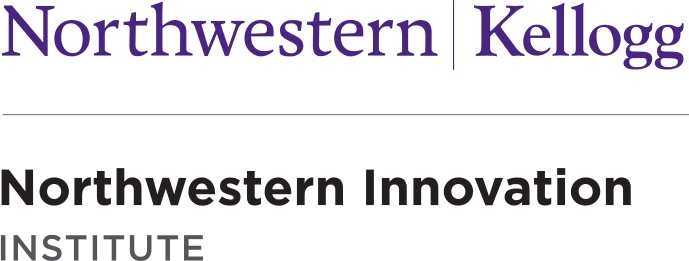
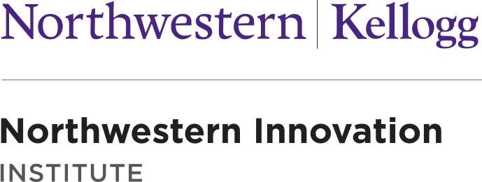

Stuart Buck
Executive Director, Good Science Project
 

Hosted by the Center for Science of Science & Innovation, the Ryan Institute on Complexity, and the Northwestern Innovation Institute at Northwestern University.
A two‑day convening bringing together scholars, policymakers, and practitioners to examine how science shapes policymaking—and how politics shapes science. The program features research talks and discussion panels spanning evidence‑based policy, geopolitics, funding, open science, and public communication.
Please note that this is a closed-door event; science journalists will be present but research presentations and panel discussions will remain off-the-record.
Reception
Breakfast
Opening remarks
Panel 1: Science & Policymaking
Coffee + Snack
Panel 2: Science and Geopolitics
Panel 3: From Open Science to Gold Standard of Science
Lunch
Research Presentations 1
Three 20‑minute presentations
Panel 4: The Politics of Science Funding
Coffee + Snack
Research Presentations 2
Four 20‑minute presentations
Research Presentations 3
Four 20‑minute presentations
Dinner
Evanston Corner Bistro
Breakfast
Panel 5: Science and the Public
Coffee + Snack
Research Presentations 4
Three 20‑minute presentations
Panel 6: Communicating Science to a Polarized Public
Lunch
Times and speakers subject to change.
Executive Director, Good Science Project
Senior Program Officer, Abundance & Growth Fund, Open Philanthropy
Professor, Michigan State University
Max Palevsky Professor; Director, Knowledge Lab, University of Chicago
Associate Professor, University of Illinois Chicago
Wendell Hobbs Professor of Managerial Politics and Senior Associate Dean for Faculty and Research, Kellogg School of Management, Northwestern University
Research Assistant Professor, Kellogg School of Management, Northwestern University

Associate Professor, University of Wisconsin–Milwaukee
Director, MIT Washington Office; fmr. CoS of the House Committee on Science
Vice President, Alfred P. Sloan Foundation; fmr. Division Director for Social and Economic Sciences at NSF
Assistant Professor, Kellogg School of Management, Northwestern University
Epoch Foundation Professor of International Management, MIT Sloan School of Management
Professor and fmr. Dean of the Ivan Allen College of Liberal Arts, Georgia Institue of Technology
Gordon & Llura Gund Family Professor; Kellogg School of Management, Northwestern University
Columnist, Bloomberg
Associate Professor, UC Berkeley
Senior Associate Dean, Strategy and Max McGraw Chair in Management and the Environment, Kellogg School of Management, Northwestern University
Former Principal Deputy Director for Policy, OSTP
Science Reporter, Nature
fmr. President, University of Vasaa; Visiting Scholar, MIT Sloan
Sr. Writer, Chronicle of Higher Education
Executive Director, NI Institute, Kellogg School of Management, Northwestern University
Senior Director, Ryan Institute on Complexity, Kellogg School of Management, Northwestern University
Gerald R. Ford University Professor; VP for Research & Innovation, University of Michigan
Executive Director, Scholars Strategy Network
Assistant Professor, Northwestern University
President, Wanxiang America; Trustee, Northwestern University
Owen L. Coon Endowed Professor; Director, Center for Communication & Public Policy, Northwestern University

Co‑founder & Executive Director, Center for Open Science; Professor, University of Virginia
Assoc. VP for Research; Professor, University of Michigan
Associate Professor, The Ohio State University
John G. Searle Professor, Director of Institute for Policy Research, Northwestern University

Vice President for Research, Northwestern University
James J. O'Connor Professor of Economics, Kellogg School of Management, Northwestern
Post Doctoral Scholar, Kellogg School of Management, Northwestern University
Professor, Johns Hopkins University
Class of 1909 Professor of Physics and Dean for Research, Princeton University
Chancellor’s Associates Endowed Chair, UC San Diego
Associate Professor, American University
Senior Vice President for Government Relations and Public Policy, Association of American Universities (AAU)
Assistant Professor, Boston College
Richard L. Thomas Professor of Leadership and Organizational Change, Kellogg School of Management, Northwestern University
Kellogg Chair of Technology, Kellogg School of Management, Northwestern University
Professor and Associate Dean for Research, University of Washington
Commentary editor, Science
Assistant Professor, University of Chicago
Center for Science of Science and Innovation
Northwestern University, Evanston, IL
Questions or updates? Email cssi-events@kellogg.northwestern.edu.